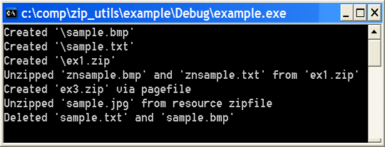

Adding zip/unzip easily, no LIBS or DLLs, with an elegant and simple API.
This article can be found on CodeProject at
www.codeproject.com/useritems/zip_utils.asp, where there is also a discussion board.
by Lucian Wischik, www.wischik.com/lu.

This source code shows how to add zip/unzip functionality to your programs. Lots of people have written their own wrappers around zip, and indeed there are several articles on codeproject that are based on earlier versions of my own code. How is this version different?
zip.cpp,zip.h
to add to your project if you want zip. Another pair unzip.cpp,unzip.h
if you want unzip (or both if you want both!). There are NO additional libraries or
DLLs to worry about.At its core my code uses zlib and info-zip. See at end for acknowledgements.
To add zip functionality to your code, add the file zip.cpp to your project,
and #include "zip.h" to your source code.
Similarly for unzipping, add the file unzip.cpp to the project and
#include "unzip.h" to your source code.
Zip and unzip can co-exist happily a single application. Or you can omit one or the other if
you're trying to save space.
The following code snippets show how to use zip/unzip. They are taken from one of the demo applications including in the download. It also has project files for Visual Studio .NET and Borland C++Builder6 and Embedded Visual C++ 3. The code snippets here use ASCII. But the functions all take arguments of type TCHAR* rather than char*, so you can use it fine under Unicode.
// We place the file "simple.bmp" inside, but inside // the zipfile it will actually be called "znsimple.bmp". // Similarly the textfile. HZIP hz = CreateZip("simple1.zip",0); ZipAdd(hz,"znsimple.bmp", "simple.bmp"); ZipAdd(hz,"znsimple.txt", "simple.txt"); CloseZip(hz);
HZIP hz = OpenZip("\\simple1.zip",0); ZIPENTRY ze; GetZipItem(hz,-1,&ze); int numitems=ze.index; // -1 gives overall information about the zipfile for (int zi=0; zi<numitems; zi++) { ZIPENTRY ze; GetZipItem(hz,zi,&ze); // fetch individual details UnzipItem(hz, zi, ze.name); // e.g. the item's name. } CloseZip(hz);
This technique is useful for small games, where you want to keep all resources bundled up inside the executable, but restricting the size.
Suppose we used a .rc with
1 RCDATA "file.zip"
to embed the zipfile as a resource.
HRSRC hrsrc = FindResource(hInstance,MAKEINTRESOURCE(1),RT_RCDATA); HANDLE hglob = LoadResource(hInstance,hrsrc); void *zipbuf = LockResource(hglob); unsigned int ziplen = SizeofResource(hInstance,hrsrc); hz = OpenZip(zipbuf, ziplen, 0); ZIPENTRY ze; int i; FindZipItem(hz,"sample.jpg",true,&i,&ze); // that lets us search for an item by filename. // Now we unzip it to a membuffer. char *ibuf = new char[ze.unc_size]; UnzipItem(hz,i, ibuf, ze.unc_size); ... delete[] ibuf; CloseZip(hz); // note: no need to free resources obtained through Find/Load/LockResource
Normally when you call UnzipItem(...) it gives the return-code ZR_OK.
But if you gave it too small a buffer so that it couldn't fit it all in, then it return ZR_MORE.
char buf[1024]; ZRESULT zr=ZR_MORE; unsigned long totsize=0; while (zr==ZR_MORE) { zr = UnzipItem(hz,i, buf,1024); unsigned long bufsize=1024; if (zr==ZR_OK) bufsize=ze.unc_size-totsize; ... maybe write the buffer to a disk file here totsize+=bufsize; }
One final option: if you compile with "ZIP_STD" defined for the preprocessor, then zip and unzip will compile using solely stdlib -- with no windows dependencies. They can compile under linux with g++. Note that some of the prototypes in zip.h and unzip.h will change accordingly: filetimes will be time_t structures rather than FILETIME, and various functions will use FILE* rather than HANDLE, and it doesn't support unicode or memory-mapping. The example program "std" does this.
STRICT? I think you should always compile with STRICT (in project-settings/preprocessor/defines), and full warnings turned on. Without STRICT, the HZIP handle becomes interchangeable with all other handles.
How to show a progress dialog? One of the included examples, "progress", shows how to do this.
How to add/remove files from an existing zipfile? The zip_utils currently only allow you to OpenZip() for unzipping, or CreateZip() for adding, but don't allow you to mix the two. To modify an existing zip (eg. adding or removing a file) you need to create a new zip and copy all the existing items from the old into the new. One of the included examples, "modify", shows how to do this. It defines two functions:
ZRESULT RemoveFileFromZip(const TCHAR *zip, const TCHAR *name); ZRESULT AddFileToZip(const TCHAR *zip, const TCHAR *name, const TCHAR *fn); // eg. AddFileToZip("c:\\archive.zip","znsimple.txt","c:\\docs\\file.txt"); // If the zipfile already contained that thing (case-insensitive), it is removed. // These two functions are defined in "modify.cpp"
"fatal error C1010: unexpected end of file while looking for precompiled header directive". To fix this, select zip.cpp and unzip.cpp and change Project > Settings > C++ > PrecompiledHeaders to NotUsingPrecompiledHeaders.
Efrat says: "I think the design is very bad", and so objects when I say that my API is clean and others are not. (Actually, he says my documentation is the most conceited he's seen and my design is the worst that he's seen!) I've reproduced his comments here, with my responses, so you can make a more informed decision whether to use my library.
[Efrat] Better instead to use the
boost IOStream library.
[Response] I love the boost library. If people can figure out how to
add it to their projects and zip/unzip with it, they should definitely use boost rather
than my code. (I'm still trying to figure it out, though, and couldn't get it to
compile under CE).
[Efrat] A compressed archive has internal state; it's a classic object; the author's
criticisms of OOP are unjustified. "OOP doesn't mean placing your code in a cpp file."
[Response] I'm trying not to be OOP.
(1) you'll never inherit from an archive, nor invoke virtual methods from it:
we only use encapsulation, not any of the other pillars of OOP. By using an opaque handle HZIP
rather than a class, I indicate this clearly to the programmer. Also
(2) C++ classes don't work cleanly across DLLs. Handles like HZIPs do.
[Efrat] For intance, progress-notifications should be done by virtual functions in a
derived class, not by callbacks.
[Response] To get progress, you invoke UnzipItem in a while loop, and each iteration
unzips a little bit more of the file. This is clean, re-entrant, and has a simple API. I think
this is an easier API than inheriting from a class. I think inheritance from
library classes is bad, in general.
[Efrat] Compression should go in a DLL.
[Response] I disagree. DLLs are always pain, for developers as well as users.
Unzip only adds 40k in any case.
[Efrat] The API doesn't use the type system to differentiate between
an HZIP for zipping and an HZIP for unzipping.
[Response] This was intentional. The difference between zipping and unzipping
is an current implementation drawback. I think an API should be clean, "aspirational", and
you shouldn't encode current implementation limitations into the type system.
[Efrat] The API uses error-codes, rather than exceptions, but anyone who has
graudated Programming 101 knows exceptions are better.
[Response] I think exceptions are not welcomed anywhere nearly as widely as Efrat
suggests. Also, they don't work cleanly across DLL boundaries, and they don't work on
PocketPC.
[Efrat] The API is unflexible; it should be coded for change, not just coded for all the options that were conceived while designing (handles,files, memory). Most users will think of sources and targets which this design can't support. [Response] The original zip uses FILE*s, which are effectively the same as windows pipes. I also provided memory-buffers which adds an enormous amount of flexibility that's easy to use and requires no additional programming. For any users who need sources and targets which can't be reached via a memory buffer, they shouldn't use these zip_utils.
[Efrat] The is unnecessarily Windows-specific. The original zlib works great and is portable; zip_utils offers no advantages. Compression is memory-manipulation and IO and so should not be platform-specific.In general, Efrat wants code to be a clean extensible framework. I don't; I want small compact code that works fine as it is. Furthermore, I think that "framework-isation" is the biggest source of bugs and code overruns in the industry.
This version of article was updated on 28th July 2005. Many thanks to the readers at CodeProject who found bugs and contributed fixes to an earlier version. There was one terrible bug where, after a large file had been unzipped, then the next one might not work. Alvin77 spotted this bug.
My work is a repackaged form of extracts from the zlib code available at www.gzip.org/zlib by Jean-Loup Gailly and Mark Adler and others. Also from the info-zip source code at www.info-zip.org. Plus a bunch of my own changes. The original source code can be found at those two mentioned websites. Also the original copyright notices can be found there, and also inside the files zip.cpp and unzip.cpp of my code.